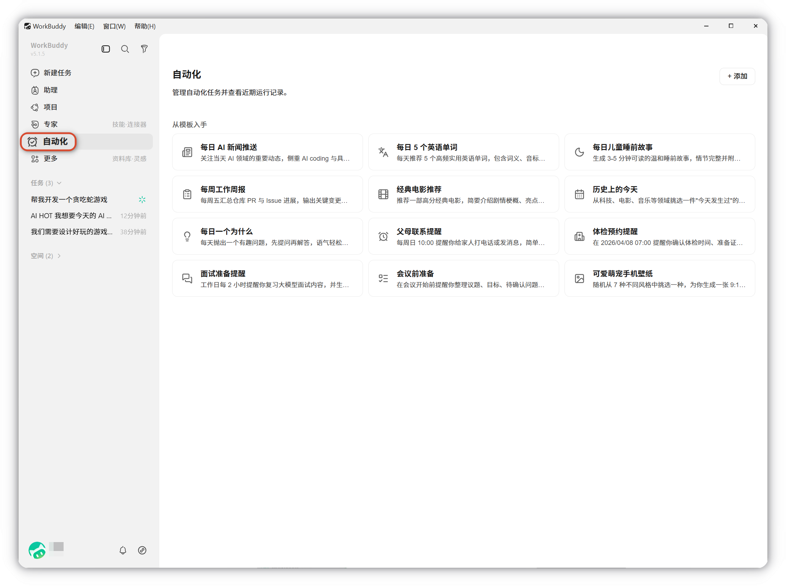
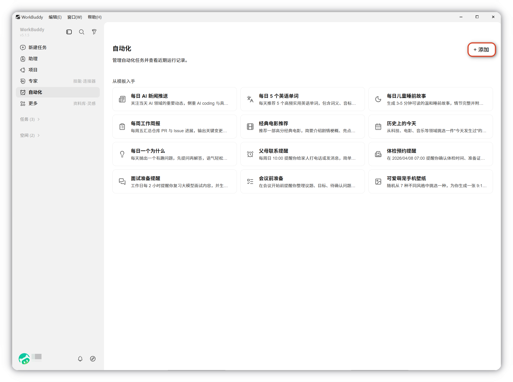
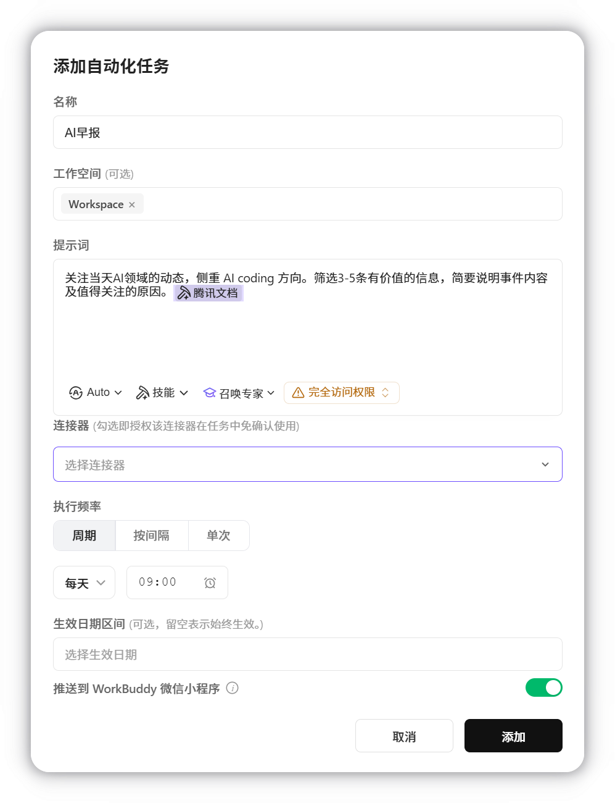
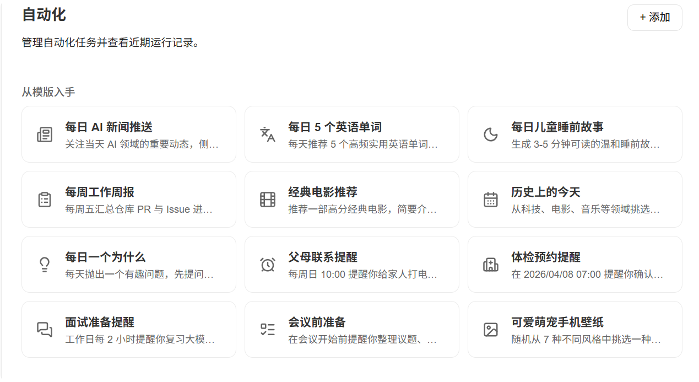
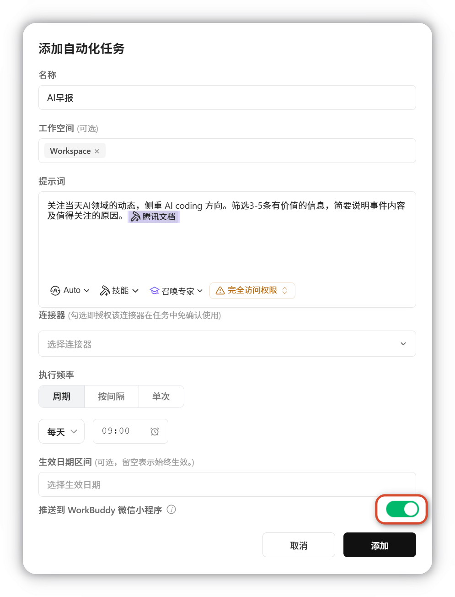
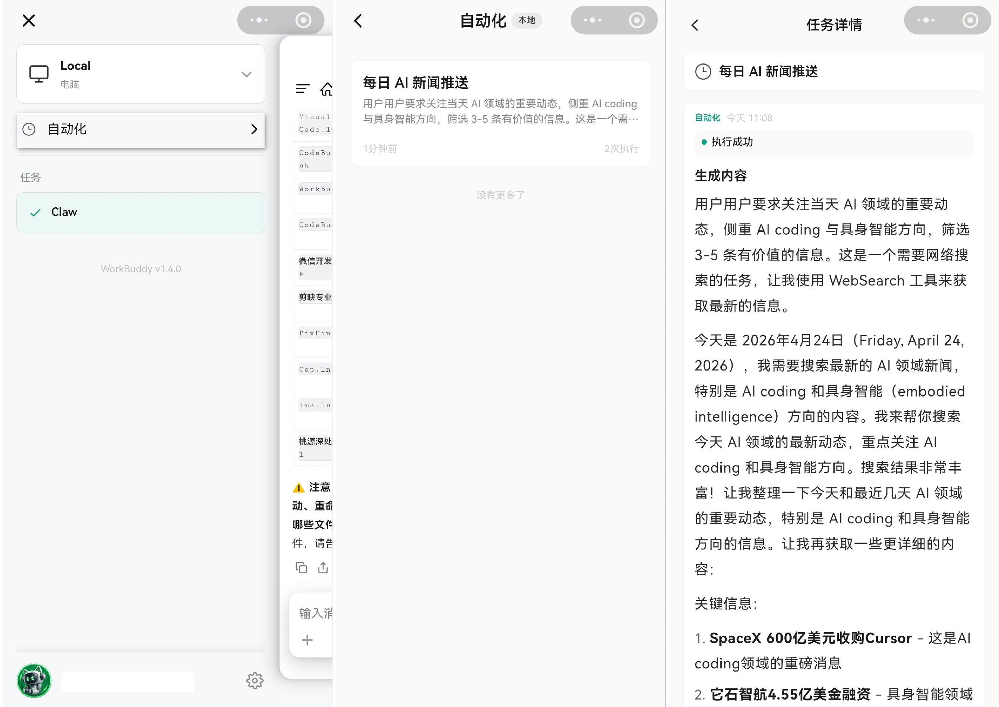

自动化
配置自动化，WorkBuddy 按设定时间自动执行周期性、重复性任务（如每日简报、周报汇总、定时数据整理），并将结果保存到指定目录。
概述
自动化在本地客户端保存定时任务配置（任务名称、prompt、调度规则、工作目录、执行状态等），在指定时间以您当前的登录身份自动发起 Agent 任务，按 prompt 执行查询、汇总、文件处理等工作；任务仅在配置的时间规则触发时执行，受任务频率、最大执行时长与系统并发控制限制。
如何使用自动化任务
1. 创建自动化任务
打开自动化页面
可查看已安排的任务及历史执行记录。

添加任务
点击右上角 添加，填写以下配置项：

| 配置项 | 说明 |
|---|---|
| 名称 | 用于区分不同自动化任务 |
| 工作空间 | 指定任务执行目录及文件保存位置，默认自动分配automation-xxxx工作空间 |
| 提示词 | 描述任务目标和输出要求 |
| 选择模型和技能 | 指定执行任务的模型和技能 |
| 定时规则 | 设置执行频率和生效日期区间 |
| 推送到小程序 | 开启后，推送会通过安全链路把件同步到云端，以便在小程序能接收到数据 |
示例
每日 AI 新闻推送

从模板入手
不想从零编写提示词？可直接使用 任务模板，覆盖新闻推送、周报生成、体检预约以及学习计划等常见场景，选择后按需修改即可。

推送到WorkBuddy小程序
打开配置后，WorkBuddy 可在任务执行完成后自动将结果发送至WorkBuddy小程序，便于第一时间查看。

示例
在小程序中查看推送结果

注意事项与重点提示
信息收集与使用
- 账户身份信息：识别任务归属，触发时沿用当前登录身份调用模型/工具/MCP/连接器。
- 用户输入内容：保存任务名称、prompt、调度说明，触发时作为 Agent 执行指令。
- 使用行为日志：任务的创建/启停/触发/执行结果与耗时，用于状态展示与审计。
- 第三方平台凭证：仅当任务调用 MCP/连接器/OAuth 服务时使用您已授权的凭证；自动化本身不另存凭证。
- 本地文件读写：仅在您指定的工作目录范围内访问。
积分消耗提醒
积分消耗视任务复杂度而定：
- 简单提醒类较低
- 代码巡检、文档汇总、连接器分析等可能产生较多 token 消耗
第三方共享
自动化调用外部模型、MCP、连接器、OAuth 平台或通知通道时发生数据共享。
安全提醒
任务在无人值守下自动执行，请审慎设置涉及文件写入/删除/资金操作的 prompt。
使用建议
- 新建任务后建议先以低频率试运行，确认 Agent 的理解与执行结果符合预期，再放大调度频率。
- 大模型在执行过程中可能存在理解偏差或非预期行为，对结果中涉及文件改动、数据变更、对外发送的部分，请保留可追溯的日志，便于核查。
- 任务调用的第三方服务由其独立提供，相关稳定性、计费规则与处理结果请关注该第三方的服务状态与协议。